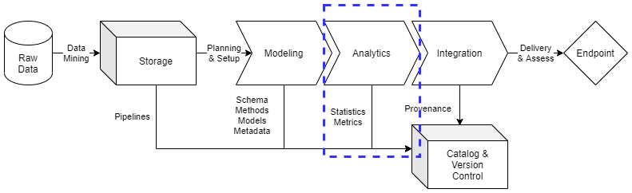

Analytics#
There is a need in data management for effective and sufficiently comprehensive analytics. As part of data processing, analytics produces consistent profiles for data that acts as a series of benchmark tests for the data model prior to integration. Analytics provides consumers of integration endpoints essential information on the model features and structures. This analytic output, stored in the data catalog, allows an institution’s internal customers to make rapid assessments for additional data management requirements while making code and tool reuse simpler to assess and implement throughout the data management system.
This document will set a baseline for data analytics practices, directing data engineers to content management practices essential for simple and impactful data analytics implementations. ciuTshi’s data management practices draws from DAMA[1] and other resources. For additional context on this document’s sections, refer to the references section.
Challenge#
Institutions require data processes that can be optimized and enhanced for continued utilization of data assets. Metrics and information for process improvement allow data management, data owners, and external stakeholders to improved decision making on data asset lifecycle management. This data-driven direction for projects and their data assets requires improved data cataloging and metadata that promote statistical measures and metrics to inform decisions over time. Analytics, as part of the data management process, encourages mobilization of statistics, code, and documentation for value insight generation supported by valid metrics.
Goals#
Produce statistics and metrics on modeling output resulting in rapid iteration on modeling issues and enriched integration outputs
Expand the utilization of analytics measures in data management to enable the growth of data-driven decision making for leadership, internal customers, and external stakeholders
Define tools and techniques that optimize analytic methods and models for data asset processes resulting in improved data governance utilities for the data management team
Processes#

Preliminary Tasks#
Security and System Compliance#
Refer to the security and content management documents for guidance and templating of data analytics content. This should cover considerations on information system and guiding policies.
Role and Responsibilities#
These are the roles currently associated with data analytics practices:
Data Manager
Deputy Data Manager
Data Management Team
Data Engineers
Data Owners
Data Stewards
Refer to the content management documents for analytics roles on different information systems, specific data architectures, and their associated policies and restrictions.
Analytics Metrics and Dimensions#
Due to the diversity of data assets handled by institutions across numerous projects and information systems, analytics will vary in form and approach. However, there are essential elements that need to be captured about the quality and effectiveness of the data management system as it exists within its particular data architecture. Analytics should pursue metrics on these dimensions:
Accuracy is difficult to measure, but should seek to quantify the degree to which the data model represents entities on the real world
Completeness observes what data is present, what data is missing, and what affect processing had on the raw data
Consistency observes the shifts or changes in data values and across data sets
Integrity observes the coherence between accuracy, completeness, and consistency between referential data and processed data or simpler factors, such as errors in the data
Reasonability checks if the modeled data outputs meet expected values
Timeliness observes the volatility of data changes, latency in production and use, or viability for use
Uniqueness observes factors such as de-duplication and entity resolution
Validity observes the conformity of values to data types and defined domains of value consistency
Metrics derived from these dimensions should account for these characteristics:
Measurable Metric has to observe something that is countable
Relevance Metrics that are relevant to the data consumer and data management team
Acceptance Metric is tied to requirement for the data
Stewardship Metrics are understood and usable by customers and stakeholders
Control Metric should indicate the data needs to be improved
Trends Metric enables analysis of data shifts over time
These analytics dimensions and others will ultimately be templated for metadata inclusion in the data catalog entry for each data asset. Additionally, the storage, modeling, and integration phases should capture basic data profiles to track shifts in the assets as they move from raw data to endpoint delivery. The profile may include:
Data Type and Format
Storage Size of Data
Data Shape
Counts of Nulls
Max/Min Value
Max/Min Length
Frequency Distribution
Cross-column analysis and cross-table analysis should be used to address issues of overlap or redundancy. What follows are the sub-domain analytic considerations for modular phases in the data management system.
Raw Data for Modeling#
Raw data assets will likely come in a variety of formats. However, attempts should be made to capture a basic data profile. This should be provided by data owner and/or data steward if possible. In the case of mined data, tooling outputs should attempt to cover as many of these data profile characteristics as possible. This profile will create the baseline for comparative analysis of the modeled data.
Modeled Data for Integration#
Modeled data may experience significant transformations once it conforms to a schema or new format. In addition to the base data profile, scheme and model specific analysis should be conducted to ensure all major dimensions have representative metrics that ensure a secure, quality endpoint deliverable. These schema and model metrics will largely be data architecture specific and their level of sufficient detail will be at the discretion of the data engineer unless otherwise outlined in the data management system documentation.
Advanced Data Analytics#
ciuTshi suggests a flexible and simple approach to analytics in data management practices. However, due to the variety of data assets in use and the complexity of challenges for a given project or metric, analytics techniques may be adapted and advanced to adjust to the requirements and complexity of the data model and its associated metrics. Ensure to update documentation, metadata, and data catalog with this information.